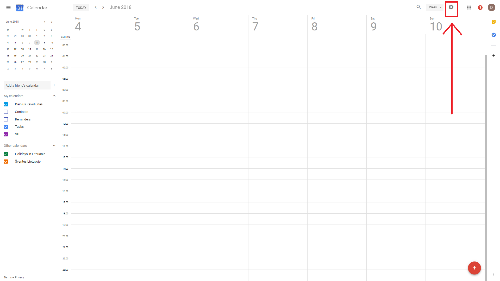
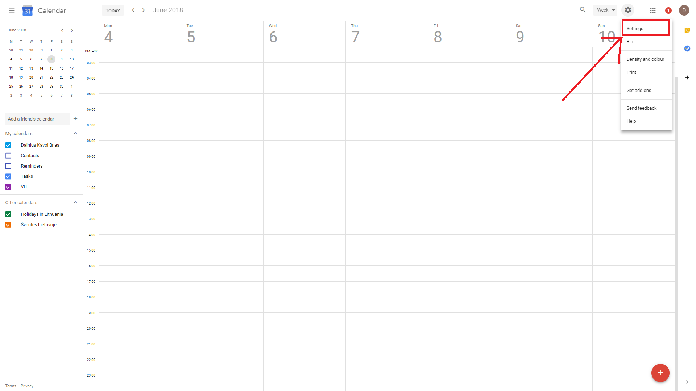
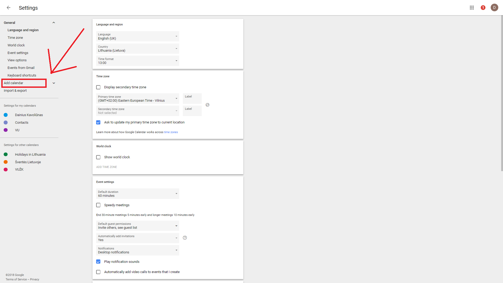
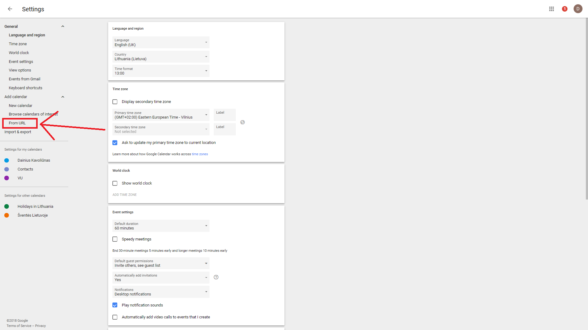
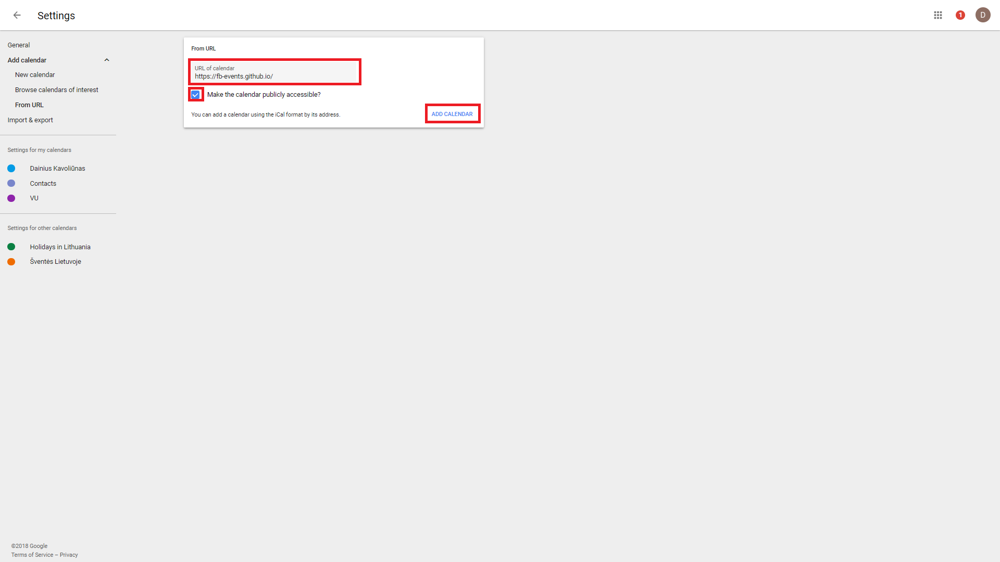
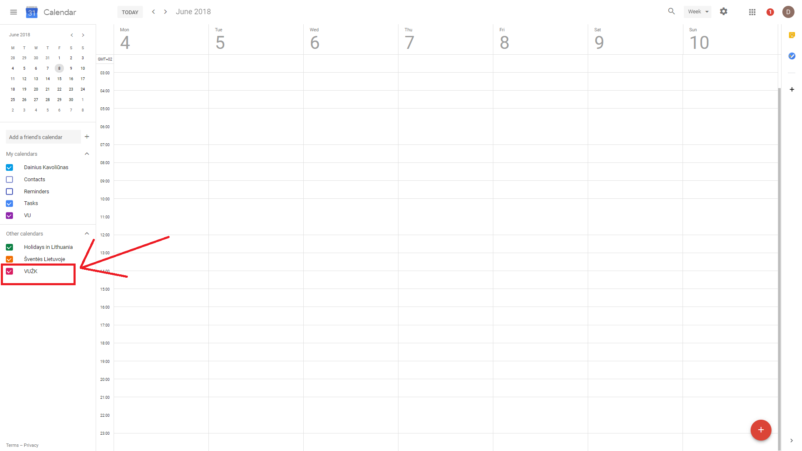

Kaip pridėti VUŽK įvykius iš Veidaknygės į Google kalendorių
- Nukopijuojame puslapio URL: https://fb-events.github.io/
- Atsidarome Google kalendorių per 'desktopą'
- Viršuje dešenėje pusėje spaudžiame ant 'girnos' simbolio ir 'nustatymų'
- Atsidariuseme lange kairėje pusėje spaudžiame ant 'pridėti kalendorių' tuomet spaudžiame ant 'iš URL'
- URL įvedimo lauke įklijuojame pirmame žingsnyje gautą URL, spaudžiame 'pridėti kalendorių', palaukiame. Jei per minutę puslapis neatsinaujina, jį perkrauname
- Matome VUŽK kalendorių prie 'kiti kalendoriai'. Jei nematome, rašome dainius.kavoliunas@gmail.com






VUŽK
2018